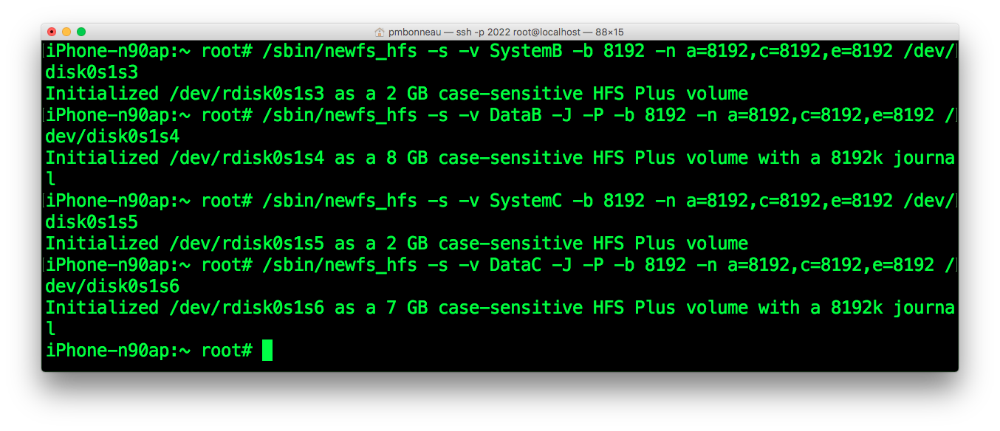
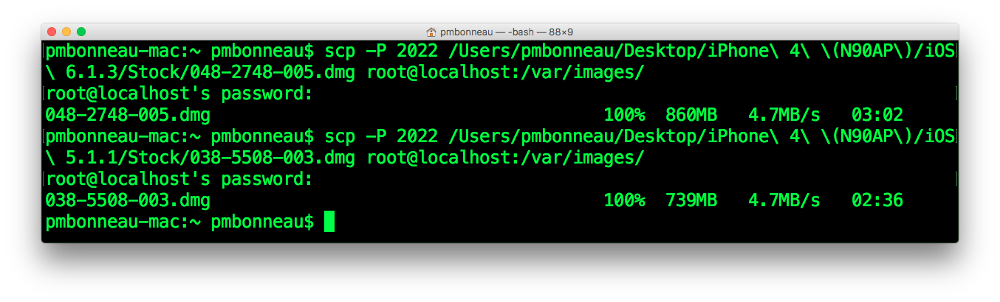
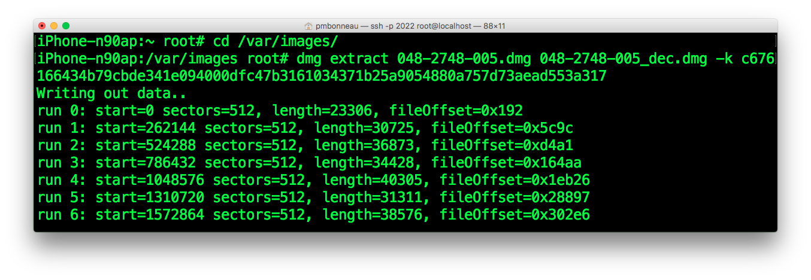
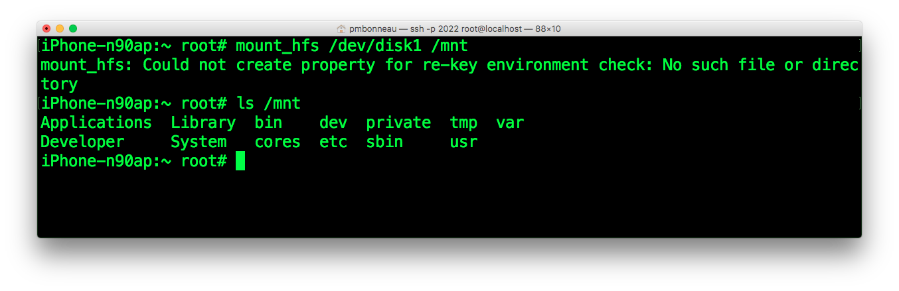
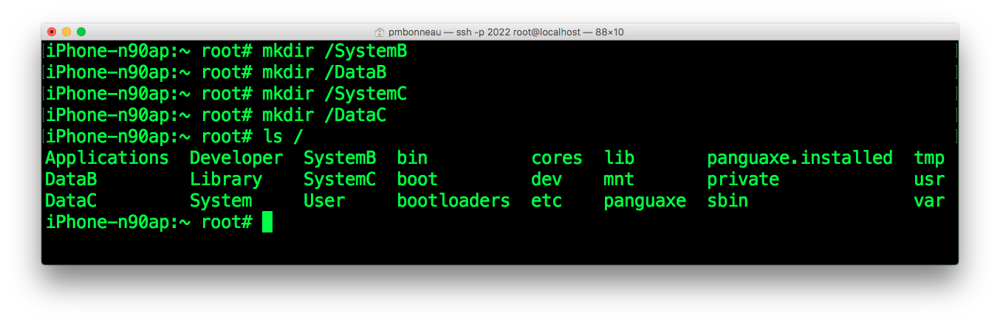
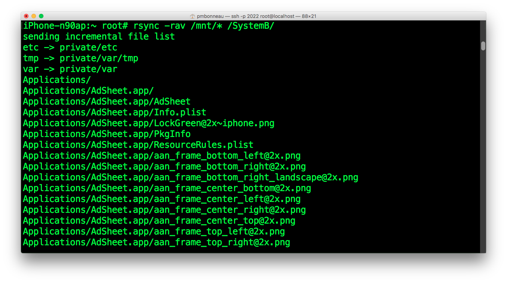
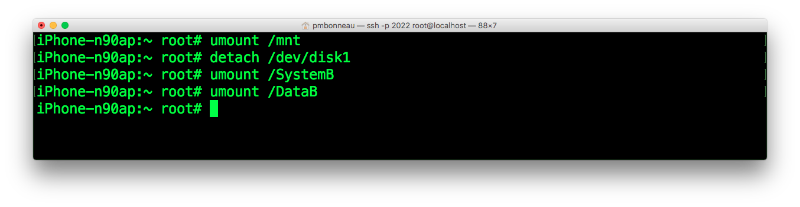
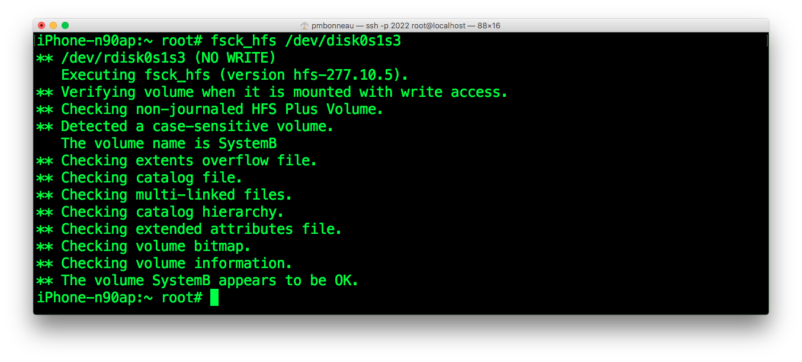
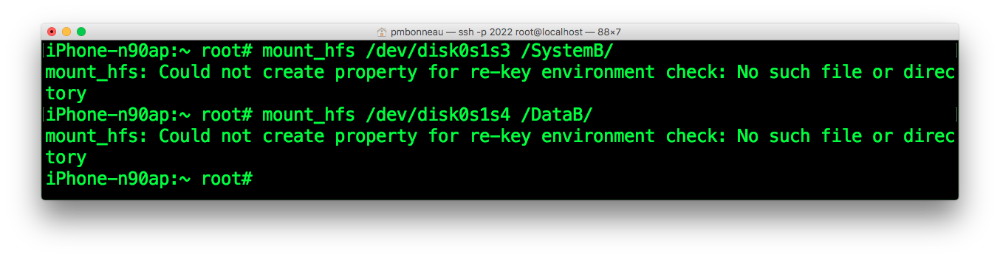
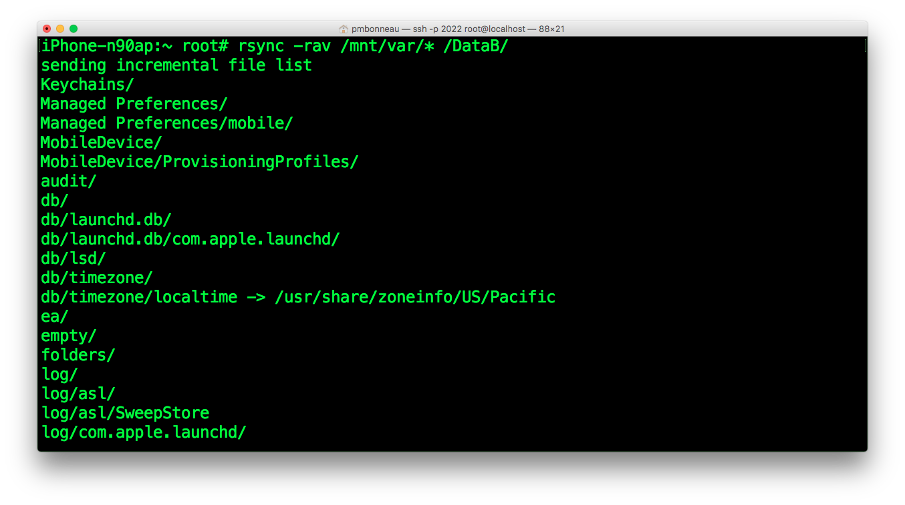

Restore iOS system images
Apple's iOS is installed on devices throught a .dmg image which contains the exact filesystem that will be installed on the device system partition. Except when kernelcache file is added to it, the system partition is never modified and stay intact until overwritten by an updated iOS dmg image.
When an iOS device is restored, the process is handled by the restore daemon. This is an executable file named restored_external located in /usr/local/bin/ on the restore ramdisk.
It does the following routines.
- Partition NAND device : Creates one smaller partition to store iOS base system and another one which fills the rest of the empty space to store user data.
- Format partitions : Creates a filesystem on the partitions such as HFS+ and set names as System and Data.
- Restore base system image : Flash the base system .dmg image on the system partition using asr.
- Verify restored image : Verifies if the base system image is correctly written to the system partition.
- Flash nand_firmware data : Flash low-level firmware images.
- Flash baseband firmware
- Install kernelcache image : Install the kernelcache image file to /System/Library/Caches/com.apple.kernelcaches/
- Create systembag : Creates the system keybag
1) Partition NAND device
We already did it, be sure you have the configuration you want and have enough free space on system partitions before go further.
2) Format partitions
There are some interesting disk format utils in /sbin of an iOS install such as newfs_hfs and newfs_msdos. Those can be used to format a disk partition.
- newfs_hfs : Format to HFS+
- newfs_msdos : Format to FAT
- newfs_apfs : Format to APFS
The secondary iOS versions we will install for this writeup are 6.1.3 and 5.1.1, both use HFS+ as partition format. Let's format secondary iOS systems partitions. To invoke newfs_hfs, connect to the main iOS system using SSH. Run the following command to format the second iOS instance system partition (SystemB):
/sbin/newfs_hfs -s -v SystemB -b [block_size] -n a=[block_size],c=[block_size],e=[block_size] /dev/disk0s1s3
Run the following command to format the second iOS instance user data partition ("DataB"):/sbin/newfs_hfs -s -v DataB -b [block_size] -n a=[block_size],c=[block_size],e=[block_size] /dev/disk0s1s4
Repeat for the third iOS instance : Run the following command to format the second iOS instance system partition ("SystemC"):/sbin/newfs_hfs -s -v SystemC -b [block_size] -n a=[block_size],c=[block_size],e=[block_size] /dev/disk0s1s5
Run the following command to format the second iOS instance user data partition ("DataC"):/sbin/newfs_hfs -s -v DataC -b [block_size] -n a=[block_size],c=[block_size],e=[block_size] /dev/disk0s1s6
3) Restore base system image
We are now ready to flash our secondary iOS systems into their dedicated partitions.
Create a folder "images" in /var on the device. This folder will be used to store stock encrypted root filesystem .dmg images before we write them to partitions. Using scp, copy the encrypted .dmg image files from each secondary iOS "Stock" folder to the /var/images folder on the device.
pmbonneau-mac#scp -P 2022 [.dmg root filesystem image] root@localhost:/var/images
 Use dmg tool (installed from Cydia) to decrypt the .dmg image.iphone-n90ap#dmg extract [encrypted .dmg image input] [decrypted .dmg image output] -k [decryption key]
 We currently have three methods to write a .dmg image to a disk device on iOS, each one have their own advantages and disadvantages.First method : Use Apple's proprietary asr utility (preferred method)
- +Used in stock iOS restores and upgrades.
- +Does checksums and verifications
- +Handles compressed .dmg images
- -Tied with kernel extensions, iOS 7 asr might not work on iOS 5.
- -Some stock dmg images do not want to restore, must have a specific format or specific asr version I guess.
This command will restore the iOS 6.1.3 root filesystem image to /dev/disk0s1s3 partition (secondary iOS system partition).
asr restore --source /mnt2/UDZO.dmg --target /dev/disk0s1s3 --erase
This command will restore the iOS 5.1.1 root filesystem image to /dev/disk0s1s5 partition (third iOS system partition).asr restore --source /mnt2/UDZO.dmg --target /dev/disk0s1s3 --erase
Second method : Use dd
This tool is included in most Unix based systems. It allows directly write to a disk device.
- +No compatibility issues, version independant tool.
- +Works with almost all types of uncompressed .dmg images
- -No checksums or validation are performed
- -Does not expand the free space (the partition size becomes the restored dmg image size).
- -Needs to uncompress images before write
pmbonneau-mac#hdiutil convert imagefile.dmg -format UDTO -o imagefile.dmg
The uncompressed image is much more larger than the compressed one, and represents the exact size your partition must have. Connect to your device using SSH and upload your uncompressed root filesystem .dmg image somewhere into the main iOS user data partition (ex. /var/images). Write it using dd, don't forget to set the correct block size (4M for 4096 and 8M for 8192).iphone-n90ap#dd if=/var/images/UDTO.dmg of=/dev/rdisk0s1s3 bs=[block_size]
After the image is written, I highly recommand to do this.iphone-n90ap#fsck_hfs -f /dev/disk0s1s3
It's kinda important because dd doesn't verify anything.Third method : cp or rsync Use this method when no one above is working.
- +The cp command is included in most (if not all) Unix based systems. For rsync, you can install it from Saurik's repo on Cydia. I highly recommand rsync over cp, as rsync seems to handle in a more beautiful way the file attributes and permissions.
- +This method works with most image types that can be mounted on an iOS device, because the image container isn't flashed. This is mostly just a dumb copy.
- -No checksums or any integrity verifications are made.
- -Sometime takes a while to copy the whole root filesystem because this is not a block-level copy.
- -You need additional tools to mount the .dmg image.
attach, from my Cydia repository (http://pmbonneau.com/Cydia)
detach, from my Cydia repository (http://pmbonneau.com/Cydia)
You can also only install iFile and directly mount the .dmg images from it.
Connect to your device using SSH and upload your decrypted root filesystem .dmg image somewhere into the main iOS user data partition (ex. /var/images).
Attach the .dmg image to a disk device.
iphone-n90ap#attach /var/images/image.dmg
A new disk device should be created in /dev.- disk1
- disk1
- disk1s2
- disk1s3
Mount the disk device to a mount point. We usually use /mnt for a temporary mount.
iphone-n90ap#mount_hfs /dev/disk1 /mnt
 Create mount points to mount system partitions (read further in this writeup about how to do this).mkdir /SystemB (iOS 6.1.3 system image)
mkdir /SystemC (iOS 5.1.1 system image)
Create mount points to mount user data partitions (read further in this writeup about how to do this).
iphone-n90ap#mkdir /DataB (iOS 6.1.3 user data)
iphone-n90ap#mkdir /DataC (iOS 5.1.1 user data)
 Copy the content of /mnt to the proper mount point. For example, if the iOS 6.1.3 system image is mounted on /mnt, we will copy its content to /SystemB.With rsync:
rsync -rav /mnt/* /SystemB/
 With cp:cp -rp /mnt/* /SystemB/
Use umount (install from Cydia) to unmount /mnt.umount /mnt
Use detach to detach the .dmg device.detach /dev/disk1
 Verify restored root filesystems To be sure filesystems were not corrupted during the restore or copy process, I highly suggest you to run fsck_hfs. This will verify the filesystem integrity.iphone-n90ap#fsck_hfs /dev/disk0s1s3
iphone-n90ap#fsck_hfs /dev/disk0s1s5
It should output something like "The volume SystemB appears to be OK".  Mount root filesystemsiphone-n90ap#mount_hfs /dev/disk0s1s3 /SystemB
iphone-n90ap#mount_hfs /dev/disk0s1s5 /SystemC
 If mount_hfs returns an error, the filesystem might be corrupted. This could happen especially when using dd method. Format the volume again and try another of the methods above. We are now ready to restore user data partition.In order to complete the first boot properly, iOS needs some base file under user data partition. Without those, the device will probably get stuck on the Apple logo with progress bar or even before that during the boot process.
The base files are included in the /var folder of the system image. We already restored it, so we can now mount our empty user data partition and copy the files to.
iphone-n90ap#mount_hfs /dev/disk0s1s4 /DataB
iphone-n90ap#mount_hfs /dev/disk0s1s6 /DataC
Use cp or rsync (preferred) to copy files and folders. Important, file attributes must be preserved.Using cp :
iphone-n90ap#cp -rp /SystemB/var/* /DataB/
iphone-n90ap#cp -rp /SystemC/var/* /DataC/
Using rsync :
iphone-n90ap#rsync -rav /SystemB/var/* /DataB/
iphone-n90ap#rsync -rav /SystemC/var/* /DataC/
 Our secondary iOS systems are now flashed, now we need to complete the installation.